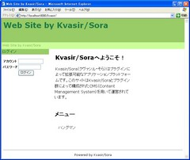

Seasar Kvasir/Sora
インストール
ここでは Kvasir/Sora を WindowsXP にインストールする手順を説明します。 他のOSの場合も大体同様の手順でインストールを行なうことができると思います。
準備
Kvasir/Sora を利用するには次のものが必要です。
- JDK
- JDK1.4.2以上
- サーブレットコンテナ
- ServletAPI2.3準拠のサーブレットコンテナ
- DBMS
- HSQLDB1.8.0.1以上（同梱）
インストール
まずKvasir/Soraのバイナリアーカイブ kvasir-generic-3.0.0-EA1 をダウンロードして下さい。 バイナリアーカイブを解凍するとkvasir.warというWARファイルができますので、これをサーブレットコンテナに配備します。 例えばTomcatであれば、CATALINA_HOME/webappsにkvasir.warをコピーします。 (CATALINA_HOMEはTomcatのインストールディレクトリとします)
これでインストールは完了です。サーブレットコンテナを起動してトップページにアクセスすると、 以下のようなWebサイトのトップページが表示されます。

表示されない場合はkvasir.warの配備に失敗しています。設定を確認して下さい。
あとはサイト管理ツールを使ってWebサイトにコンテンツを配置したり外観をカスタマイズしたり機能を追加したりしてオリジナルのWebサイトを構築して下さい。Webサイトのカスタマイズ方法については、まず始めてみようを読んでみて下さい。
Enjoy Kvasir/Sora!